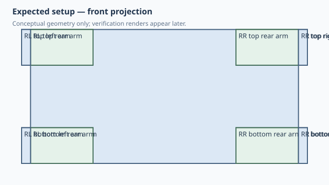

Forge model example
Eight vertical L-profiles: two per side corner
What this example makes
Each rounded vertical side corner carries exactly two outside angle profiles. On the 60 mm frame they occupy Z=0..16 and Z=44..60.

Forge code
This is the complete Forge source used for this example.
"""Eight vertical L-profiles: two on each rounded side corner."""
class FrameBlock:
_width = 120.0
_depth = 80.0
_height = 60.0
def build(self):
return Box(
self._width,
self._depth,
self._height,
anchor=Anchor.BOTTOM,
).fillet(8, edges=Edges.VERTICAL)
class LProfile:
ARM_LENGTH = 28.0
THICKNESS = 4.0
PROFILE_HEIGHT = 16.0
def build(self):
with Sketch(name="Profile", plane="XY") as sketch:
Polygon2D(
[
(0, 0),
(self.ARM_LENGTH, 0),
(self.ARM_LENGTH, -self.THICKNESS),
(-self.THICKNESS, -self.THICKNESS),
(-self.THICKNESS, self.ARM_LENGTH),
(0, self.ARM_LENGTH),
],
plane="XY",
)
return sketch.extrude(self.PROFILE_HEIGHT)
class EightCornerBrackets:
frame_width = 120.0
frame_depth = 80.0
frame_height = 60.0
def build(self):
frame = FrameBlock(
_width=self.frame_width,
_depth=self.frame_depth,
_height=self.frame_height,
)
profile = LProfile()
half_width = half(self.frame_width)
half_depth = half(self.frame_depth)
top_height = self.frame_height - LProfile.PROFILE_HEIGHT
def placed(x, y, angle, height):
rotation = None if angle == 0 else (Z, angle)
return profile.copy(
placement=Placement(
x=x,
y=y,
z=height,
rotation=rotation,
),
)
front_left_bottom = placed(-half_width, -half_depth, 0, 0)
front_left_top = placed(-half_width, -half_depth, 0, top_height)
front_right_bottom = placed(half_width, -half_depth, 90, 0)
front_right_top = placed(half_width, -half_depth, 90, top_height)
rear_right_bottom = placed(half_width, half_depth, 180, 0)
rear_right_top = placed(half_width, half_depth, 180, top_height)
rear_left_bottom = placed(-half_width, half_depth, 270, 0)
rear_left_top = placed(-half_width, half_depth, 270, top_height)
return (
frame
+ front_left_bottom + front_left_top
+ front_right_bottom + front_right_top
+ rear_right_bottom + rear_right_top
+ rear_left_bottom + rear_left_top
)
EightCornerBrackets()
API used
LProfile.copy(placement=Placement(x=..., y=..., z=..., rotation=(Z, ...)))
Reference code
The same model is written independently with the reference libraries below. This makes it easier to compare modelling style and the resulting shape.
PythonSCAD
"""PythonSCAD reference: two short L profiles on each vertical frame corner."""
from pythonscad import *
frame = cube([120, 80, 60], center=True).up(30).fillet(8)
def l_profile():
horizontal = cube([32, 4, 16], center=True).translate([12, -2, 8])
vertical = cube([4, 32, 16], center=True).translate([-2, 12, 8])
return horizontal | vertical
model = frame
for x, y, angle in [(-60, -40, 0), (60, -40, 90), (60, 40, 180), (-60, 40, 270)]:
low = l_profile().rotz(angle).translate([x, y, 0])
high = l_profile().rotz(angle).translate([x, y, 44])
model = model | low | high
pyBOSL2
"""pyBOSL2 geometry reference: two L profiles on every vertical corner."""
from pybosl2 import Anchor, cuboid
frame = cuboid([120, 80, 60], rounding=8, edges=Anchor.Z).up(30)
def l_profile():
horizontal = cuboid([32, 4, 16]).translate([12, -2, 8])
vertical = cuboid([4, 32, 16]).translate([-2, 12, 8])
return horizontal | vertical
model = frame
for x, y, angle in [(-60, -40, 0), (60, -40, 90), (60, 40, 180), (-60, 40, 270)]:
low = l_profile().rotate(angle, [0, 0, 1]).translate([x, y, 0])
high = l_profile().rotate(angle, [0, 0, 1]).translate([x, y, 44])
model = model | low | high
CadQuery
"""CadQuery reference for two short L profiles on each vertical frame corner."""
import cadquery as cq
frame = (
cq.Workplane("XY")
.box(120, 80, 60, centered=(True, True, False))
.edges("|Z")
.fillet(8)
.val()
)
horizontal = cq.Solid.makeBox(32, 4, 16, cq.Vector(-4, -4, 0))
vertical = cq.Solid.makeBox(4, 32, 16, cq.Vector(-4, -4, 0))
profile = horizontal.fuse(vertical)
model = cq.Assembly()
model.add(frame, name="frame")
for corner, (x, y, angle) in enumerate([
(-60, -40, 0),
(60, -40, 90),
(60, 40, 180),
(-60, 40, 270),
]):
rotation = cq.Location(cq.Vector(0, 0, 0), cq.Vector(0, 0, 1), angle)
for level, z in (("low", 0), ("high", 44)):
model.add(
profile,
name=f"profile_{corner}_{level}",
loc=cq.Location((x, y, z)) * rotation,
)
build123d
"""build123d reference: two reusable L protectors per vertical frame corner."""
from build123d import (
Align,
Axis,
BasePartObject,
Box,
BuildPart,
Locations,
Mode,
Rot,
fillet,
)
class LProtector(BasePartObject):
def __init__(self, mode=Mode.ADD):
with BuildPart() as profile:
with Locations((12, -2, 8)):
Box(32, 4, 16)
with Locations((-2, 12, 8)):
Box(4, 32, 16)
super().__init__(part=profile.part, mode=mode)
bottom = (Align.CENTER, Align.CENTER, Align.MIN)
with BuildPart() as model:
Box(120, 80, 60, align=bottom)
fillet(model.edges().filter_by(Axis.Z), radius=8)
for x, y, angle in [
(-60, -40, 0),
(60, -40, 90),
(60, 40, 180),
(-60, 40, 270),
]:
for z in (0, 44):
with Locations((x, y, z)):
with Locations(Rot(0, 0, angle)):
LProtector()
How Forge builds it in SolidCraft
Forge binds the occurrence ids returned by component.create/occurrence.copy to replay variables. Numeric unrotated copies use occurrence.copy translate directly; symbolic positions and rotations use a later occurrence.move addressed by the bound id.
Show generated SolidCraft commands
parameters.add
parameters.add
parameters.add
component.create
solid.box
solid.fillet
component.activate
component.create
sketch.create
sketch.line
sketch.finish
solid.extrude
component.activate
occurrence.copy
occurrence.copy
occurrence.copy
occurrence.copy
occurrence.copy
occurrence.copy
occurrence.copy
occurrence.move
occurrence.move
occurrence.move
occurrence.move
occurrence.move
occurrence.move
occurrence.move
occurrence.moveSolidCraft result
Technical test details
Q1 and Q2 tests
These are the exact automated tests used for this example.
- Q1 NOT RUN
- Q2 NOT RUN
Geometry checks
These are the sizes and measurement points used by the automated checks.
| Body | Minimum | Maximum |
|---|---|---|
| FrameBlock | [-60, -40, 0] | [60, 40, 60] |
| front-left bottom | [-64, -44, 0] | [-32, -12, 16] |
| front-left top | [-64, -44, 44] | [-32, -12, 60] |
| front-right bottom | [32, -44, 0] | [64, -12, 16] |
| front-right top | [32, -44, 44] | [64, -12, 60] |
| rear-right bottom | [32, 12, 0] | [64, 44, 16] |
| rear-right top | [32, 12, 44] | [64, 44, 60] |
| rear-left bottom | [-64, 12, 0] | [-32, 44, 16] |
| rear-left top | [-64, 12, 44] | [-32, 44, 60] |
- Is the size check enough for this model? Yes — This case adds eight placements of the qualified corner-bracket geometry. Per-occurrence bounds and the visual decomposition describe the added placement geometry; native relationships are checked separately.
- Views checked: iso, front, right
Saved-design test
Checked in the saved model. Change frame_width/depth/height from 120x80x60 to 160x120x90 mm; all four corner pairs follow the calculated X/Y positions and each upper member moves to Z=74..90.
Raw test files
- Forge fixture source
- PythonSCAD reference source
- pyBOSL2 reference source
- CadQuery reference source
- build123d reference source
- Generated command JSON in build output
Reference documentation
- SolidCraft: component.create/occurrence.copy return real occurrence ids; the replay executor binds those ids before later parametric occurrence.move commands.
- BOSL2: One neutral component is repeated by assembly-owned placement.